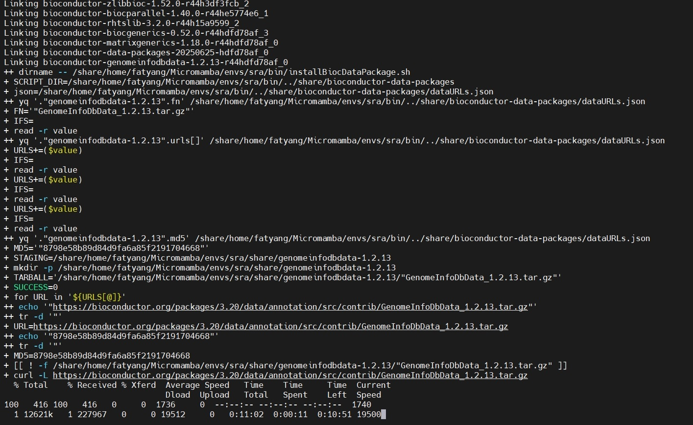

Network Issues During Installation¶
Problem Description¶
When attempting to install chromIDEAS using the command:
conda install fatyang::chromideas
The process gets stuck at the following stage:

Root Cause¶
This issue typically occurs due to poor network connectivity, which is more common in certain regions (such as China).
Solution¶
To resolve this, manually download the GenomeInfoDbData_1.2.13.tar.gz package to bypass conda’s repeated download attempts.
Procedure:
Press
Ctrl + Cto terminate the installation process.Manually download the
GenomeInfoDbData_1.2.13.tar.gzpackage (highlighted in yellow in the screenshot) and upload it to the server location shown in red:/share/home/fatyang/Micromamba/envs/sra/share/genomeinfodbdata-1.2.13/
Ensure the filename is exactly
"GenomeInfoDbData_1.2.13.tar.gz", notGenomeInfoDbData_1.2.13.tar.gz.Modify the installation script. Edit the
installBiocDataPackage.shscript (highlighted in green) by adding the following three lines as indicated:#!/bin/bash set -ex # takes a single parameter, the package name SCRIPT_DIR="$( dirname -- "${BASH_SOURCE[0]}" )/../share/bioconductor-data-packages" json="${SCRIPT_DIR}/dataURLs.json" FN=`yq ".\"$1\".fn" "${json}"` ##readarray is bash4, while OSX only has bash 3 #readarray URLS < <(yq ".\"$1\".urls[]" "${json}") while IFS= read -r value; do URLS+=($value); done < <(yq ".\"$1\".urls[]" "${json}") MD5=`yq ".\"$1\".md5" "${json}"` # Use a staging area in the conda dir rather than temp dirs, both to avoid # permission issues as well as to have things downloaded in a predictable # manner. STAGING=$PREFIX/share/"$1" mkdir -p $STAGING TARBALL=$STAGING/$FN SUCCESS=0 for URL in ${URLS[@]}; do URL=`echo $URL | tr -d \"` # Trim any flanking quotes MD5=`echo $MD5 | tr -d \"` # Trim any flanking quotes #################################### add by fatyang #################################### if [[ ! -f ${TARBALL} ]]; then curl -L $URL > $TARBALL fi #################################### add by fatyang #################################### [[ $? == 0 ]] || continue # Platform-specific md5sum checks. if [[ $(uname -s) == "Linux" ]]; then if md5sum -c <<<"$MD5 $TARBALL"; then SUCCESS=1 break fi else if [[ $(uname -s) == "Darwin" ]]; then if [[ $(md5 $TARBALL | cut -f4 -d " ") == "$MD5" ]]; then SUCCESS=1 break fi fi fi done if [[ $SUCCESS != 1 ]]; then echo "ERROR: post-link.sh was unable to download any of the following URLs with the md5sum $MD5:" printf '%s\n' "${URLS[@]}" exit 1 fi # Install and clean up R CMD INSTALL --library=$PREFIX/lib/R/library $TARBALL rm $TARBALL rmdir $STAGING
Re-run the installation command:
conda install fatyang::chromideas
The installation should now complete successfully.
Additional Support¶
If you encounter further issues while using chromIDEAS:
Submit questions on GitHub
Contact the author via email: yangliu326459@gmail.com